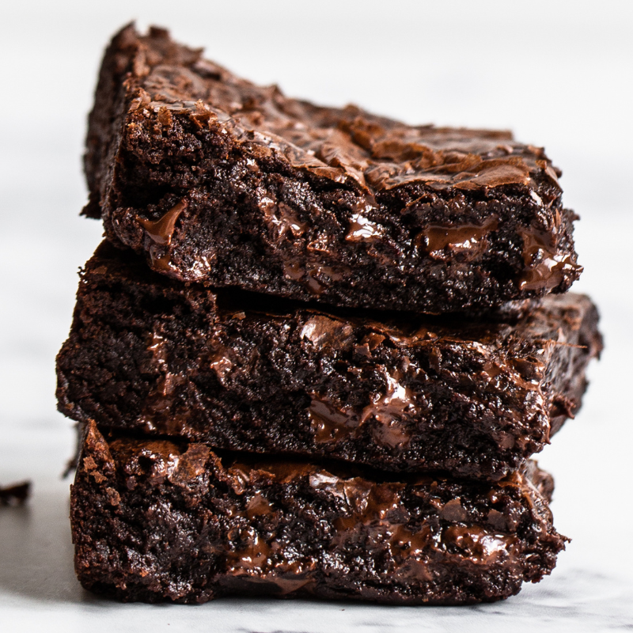

Chocolate Fudge Brownies

Description
This recipe is for the most perfect brownies in the world. Combining espresso powder and salt, creating a combo that is to literally die for.
Ingredients
- 8 ounces of half dark chocolate
- 1/4 cup of Dutch process alkaline cocoa powder
- 1 tablespoon of espresso powder
- 1 and 1/4 cups of unsalted melted butter
- 2 cups of granulated sugar
- 1/2 cup of dark brown sugar
- 2 teaspoons of vanilla extract
- 2 teaspoons of salt
- 6 eggs
- 2 cups of flour
- 1/2 cup of Dutch process cocoa powder
Steps
- Prepare the pan, by buttering it, putting parchment paper on top, and buttering the parchment paper.
- Chop the chocolate and place on a measuring cup, then add the alkaline cocoa powder and espresso. Melt the butter, add it still hot to the measuring cup, and let it sit for 2 minutes. Stir and reserve.
- Mix the sugars, vanilla extract and salt. Then, add one egg and mix, before adding the rest of the eggs. Beat the mixture until it's a lightish brown color, then add the ganache mixture to it an mix.
- Mix the rest of the dry ingredients (flour and cocoa powder) gently into the mixture. Pour the final mixture into the prepared pan.
- Preheat the oven to 350 degrees Fahrenheit, then cook the batter for 20 minutes. Take it out and slam into a counter, then put back into the oven to cook for 25 minutes. Let the brownies rest for a couple of minutes and enjoy!
Home